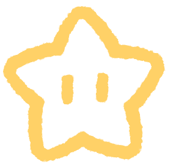
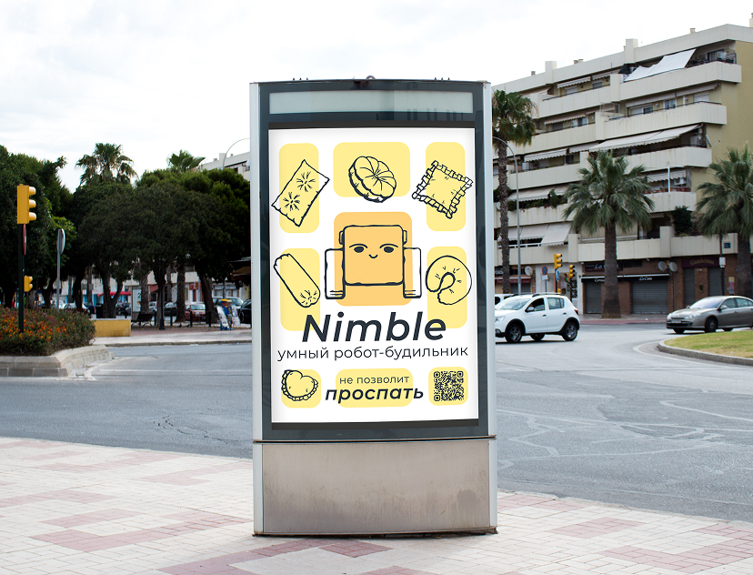
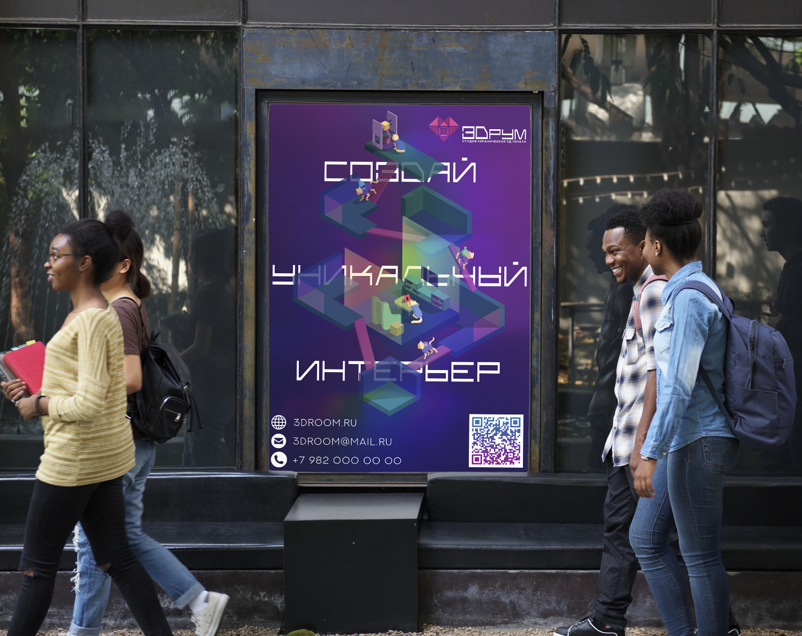
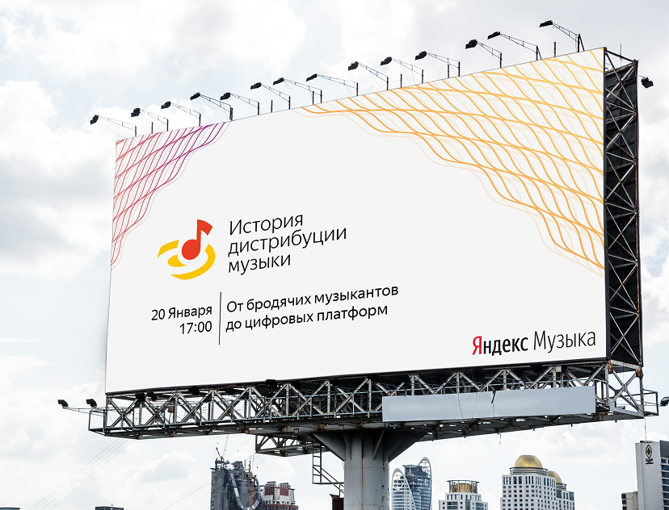
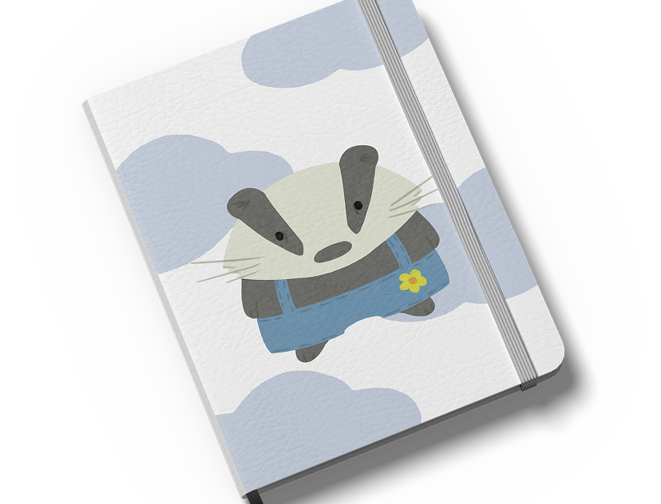
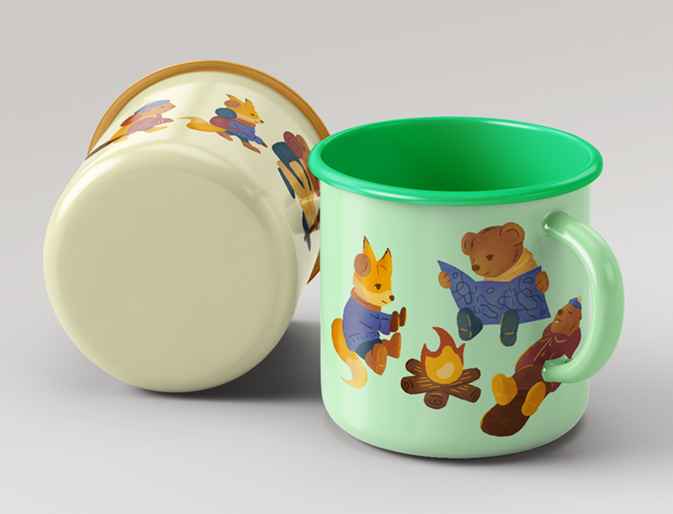
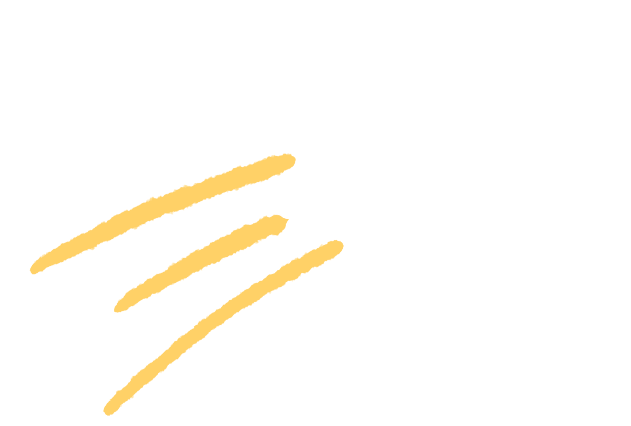

Проекты

Робот-будильник Nimble
2024
Концепция умного робота-будильника, который перемещается по комнате и использует ИИ для анализа фаз сна. Итогом стали фирменный стиль, интерфейс приложения, буклет, постер и рекламная анимация.

Фирменный стиль 3Dрум
2022
Проект посвящен брендингу студии керамической 3D-печати, специализирующейся на предметах интерьера. В айдентике сочетаются неон, лого в форме сердца-дома, изометрические иллюстрации и рамки печатного станка.

Выставка «История дистрибуции музыки»
2023
Проект представляет собой концепцию выставки для «Яндекс Музыки», посвященной эволюции распространения музыки. Визуальный язык основан на корпоративной палитре Яндекса и мотиве звуковых волн.

Маскоты-животные
2025
Разработаны три антропоморфных персонажа – барсук, заяц и опоссум. На их основе создана линейка продукции: многоразовые стаканы, блокноты, открытки и шоппер.

Маскоты Центра детско-юношеского туризма
2026
Проект посвящен созданию маскотов для Центра детско-юношеского туризма. Главный герой — мишка-товарищ, его друзья — бобренок и лисичка. В серии иллюстраций они показаны в реальных походных ситуациях.
